Lecture 3: Connecting Qubits Together#
Warning
These lecture notes are a work in progress and are not a replacement for watching the lecture video, it’s intended to be a supplementary reading after watching the lecture
Learning outcomes
In this lecture we discuss how we connect multiple qubits. Combining qubits brings the full potential of quantum computing. We learn about multi qubit gates and their role in quantum computing. We familiarise ourselves with features of quantum physics that make quantum computing different from classical computing. We touch upon the necessary mathematical framework and tools to enable us working with multi-qubit system through gates.
Introduction#
In the previous lecture Lecture 2: From Bits to Qubits we learnt that a qubit is one of the simplest example of a quantum system, and how unitary operators manipulate a qubit’s state. We also identified that quantum gates are unitary operators. But there very little one can do with single qubit, much like a classical bit. Things become interesting, when we have multiple qubits to work with.
So here we learn what happens when one combines several qubits, and for such system how does quantum gate look like. We discuss the relevant mathematical background to get comprehension of multi qubit quantum system, as well as how quantum computing becomes interesting with several qubits.
We also familiarise with the features of quantum physics that make quantum computing different from classical computing, especially aspect that become relevant in combining qubits. We already disussed some key aspect of quantum physics in previous lecture, here we touch upon some other aspects.
Multi-qubit systems#
Unitary matrices (recap)#
Let’s do a quick recall about the unitary matrices: A matrix \(U\) is unitary if
where \(U^\dagger\) is the conjugate transpose. Unitary matrices preserve the norm of a vector:
This is what keeps quantum states normalized (probabilities sum to 1) after a gate is applied.
Every quantum gate is represented by a unitary matrix
This is why quantum gates are reversible: \(U^{-1} = U^\dagger\)
Single-qubit gates are \(2\times2\) unitary matrices, e.g.
We briefly mentioned in previous lecture, that for \(n\) qubits, gates are represented by \(2^n \times 2^n\) unitary matrices. We will see how later in the sections below.
Tensor product of states#
Recall that for a single qubit, the state was parameterised by two real angles \(\theta, \phi\). We could access all possible states by varying the \(\theta\) and \(\phi\) independently. If we have two qubits, collectively, there is two sets of these two numbers, representing each qubit.
If we have a system that is described by a pair of qubits, then there are four parameters, say \((\theta_1, \phi_1, \theta_2, \phi_2)\) that we can vary. How do we describe the measurement, or computational basis for that? To do this, recall the Stern-Gerlach experiment from lecture-02 and imagine we have a furnace that has two holes. A pair of atoms are thrown in sync. See the animation below -
Since qubits A, and B are measured independently now through two \(Z-\)axis magnets, there are four landing spots on the sreen. Two \(|0_A\rangle\) and \(|1_A\rangle\) for qubit A, and two \(|0_B\rangle\) and \(|0_B\rangle\) for qubit B. Combinatorially, there are four possible outcomes for the combined two qubit system, which we can label as:
Thus one can write a generic superposition state for two qubit system as follows:
Where \(c_{00}\) etc are coefficients, with sum of their magnitude squared is 1. Now, do we come up with new set of coefficients, everytime we add a qubit? or can we build up from individual qubits. The answer is later one, and there is a proper mathematical backend that helps us. It’s called Tensor Product.
Definition
The tensor product (\(\otimes\)) is how we combine individual qubit states (or operators) into a description of a joint, multi-qubit system. For two single-qubit states, we write the state representing combined system of two qubits as:
Here the state of the combined system is a 4-length column vector, with coefficient emerging from the component qubit states. We identify that \(c_{00} = a_1 a_2\), \(c_{01} = a_1 b_2\) and so on.
For convenience, we use shorthand notation: \(|\psi_1\rangle \otimes |\psi_2\rangle\) is often written \(|\psi_1\rangle|\psi_2\rangle\) or \(|\psi_1 \psi_2\rangle\). Thus the measurement/computational basis \(|0_A\rangle \otimes |0_B\rangle\) is simply written as \(|00\rangle\) as shown in the animation.
By now you would have realised what would adding another qubit would do. With three qubits, there are 8 combinatorial outcomes:
Definition
The set of all possible states for a given quantum system is called Hilbert Space.
The set of states that are measurement outcomes for quantum system are called Computational Basis states.
A system of \(n\) qubits lives in a Hilbert space of dimension \(2^n\) — this exponential growth is a key resource (and challenge) in quantum computing.
Examples
- \[\begin{split}|0\rangle \otimes |1\rangle = \begin{pmatrix} 1 \\ 0 \end{pmatrix} \otimes \begin{pmatrix} 0 \\ 1 \end{pmatrix} = \begin{pmatrix} 0 \\ 1 \\ 0 \\ 0 \end{pmatrix}\end{split}\]
- \[\begin{split}|+\rangle \otimes |0\rangle = \frac{1}{\sqrt{2}}\begin{pmatrix} 1 \\ 1 \end{pmatrix} \otimes \begin{pmatrix} 1 \\ 0 \end{pmatrix} = \frac{1}{\sqrt{2}}\begin{pmatrix} 1 \\ 0 \\ 1 \\ 0 \end{pmatrix}\end{split}\]
Multi-qubit basis#
For a single qubit, the computational basis is \(\{|0\rangle, |1\rangle\}\).
For \(n=2\) qubits, the basis consists of all \(2^n=4\) combinations of 0s and 1s: \(\{|00\rangle, |01\rangle, |10\rangle, |11\rangle\}\).
General 2-qubit state is superposition over 4 basis states:
Normalization requires:
Generalisation
For \(n\) qubits, the basis has \(2^n\) states — e.g. 10 qubits already gives 1024 basis states.
Exponential scaling \(\rightarrow\) classical simulation becomes intractable, opportunity for quantum advantage.
Tensor product of gates - matrix notation#
Similar to tensor product of the state, which are represented as column vector, we have tensor product of quantum operators, or quantum gates: For example, applying \(H\) to qubit 1 and \(X\) to qubit 2, gives us:
Acting on the 2-qubit state \(|00\rangle = \begin{pmatrix}1\\0\end{pmatrix}\otimes\begin{pmatrix}1\\0\end{pmatrix} = \begin{pmatrix}1 \\ 0 \\ 0 \\ 0 \end{pmatrix}\) gives:
Tensor product of gates - Dirac notation#
Alternatively we can perform the same calculation using kets as:
We see that the gates act independently on their respective qubits – \(H\) acts on qubit 1, giving \(|+\rangle\) and \(X\) acts on qubit 2, giving \(|1\rangle\).
We can also write this as \(H_1 X_2 |00\rangle\), where the subscript indicates which qubit the gate acts on.
It is important to note that \(H_1 X_2 \neq X_2 H_1\) — the order of operations matters, and in general multi-qubit gates do not commute.
Separable operations#
A multi-qubit operation is separable if it can be written as a tensor product of single-qubit (or single-subsystem) operations:
Applying a separable operation to a product state gives another product state — no correlations between qubits are created.
Separable operations are the natural extension of single-qubit gates to multiple qubits — but they alone are not enough for quantum advantage.
For this, we need to generate entanglement.
Multi-qubit circuit diagrams
Each horizontal line represents a qubit, and gates are applied from left to right.
Tensor products of single-qubit gates are represented by gates on separate qubit lines.
{kind=link}
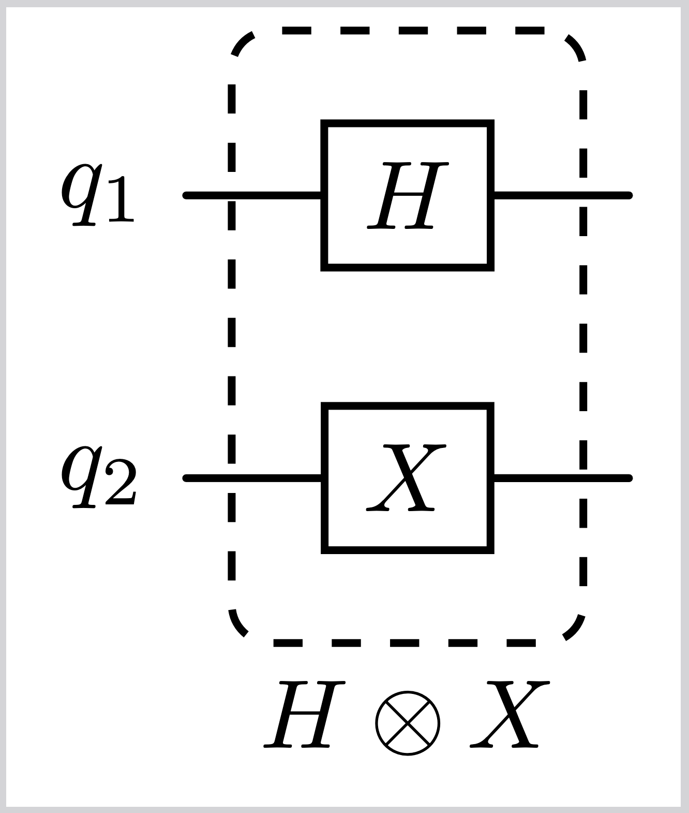
Entanglement (mathematically)#
Consider a two-qubit system with Hilbert space \(\mathcal{H} = \mathcal{H}_A ⊗ \mathcal{H} _B\).
A general state of the system can be written as a linear combination of the basis states: $\( |\psi\rangle_{AB} = \sum_{i,j} c_{ij} |i\rangle_A \otimes |j\rangle_B \)$
If \(|\psi\rangle_{AB}\) can be written as \(|x\rangle_A \otimes |y\rangle_B\) then the state is separable. Otherwise, it is entangled.
The Bell state \(|\Phi^+\rangle = \frac{1}{\sqrt{2}}(|00\rangle + |11\rangle)\) is entangled because it cannot be written as a product of single-qubit states.
The state \(|\psi\rangle = \frac{1}{\sqrt{2}}(|00\rangle + |01\rangle)\) is separable because it can be written as \(|0\rangle \otimes \frac{1}{\sqrt{2}}(|0\rangle + |1\rangle)\).
Multi-qubit gates#
CNOT gate#
The Controlled-NOT (CNOT) gate acts on two qubits — a control and a target.
If control is \(|0\rangle\), target is unchanged.
If control is \(|1\rangle\), target is flipped (X applied).
Matrix representation in the computational basis:
Circuit diagram representation:
{kind=link}
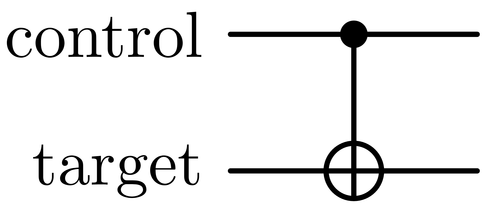
| Input | Output | ||
|---|---|---|---|
| Control | Target | Control | Target |
| 0 | 0 | 0 | 0 |
| 0 | 1 | 0 | 1 |
| 1 | 0 | 1 | 1 |
| 1 | 1 | 1 | 0 |
“Key point: CNOT is entangling”
CNOT cannot be written as \(U_1 \otimes U_2\).
Applying CNOT can create entanglement:
This is a Bell state: maximally entangled, impossible to reach with only separable gates.
Controlled-U gate#
Controlled-U Gate
CNOT is a controlled-X gate – it performs a bitflip on the target if the control is in state \(|1\rangle\).
We can generalise this to a controlled version of any single-qubit unitary
Definition
The Controlled-\(U\) gate acts on two qubits — a control and a target.
If control qubit is \(|0\rangle\), target is unchanged.
If control qubit is \(|1\rangle\), \(U\) is applied to the target.
Matrix representation in the computational basis:
Circuit diagram representation:
{kind=link}
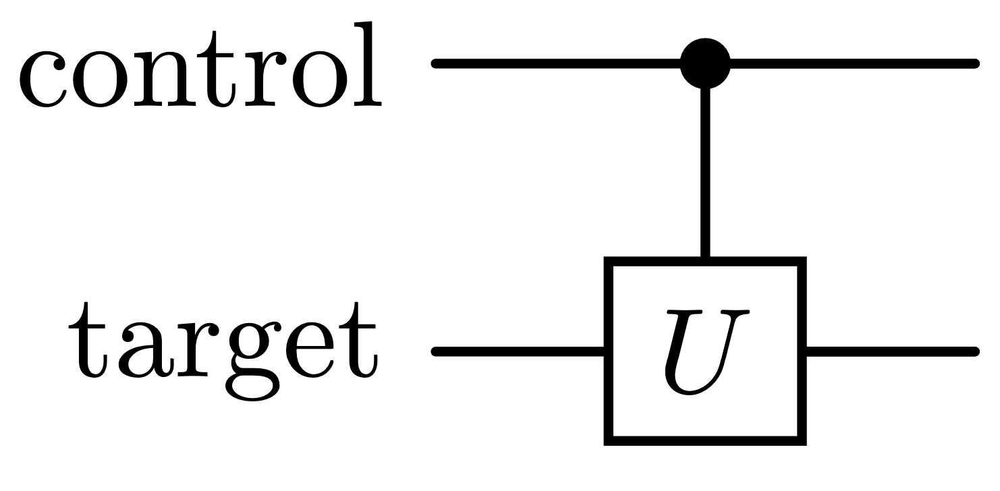
Action on basis states:
Control in |
Target in |
Control out |
Target out |
|---|---|---|---|
0 |
\(\vert\psi\rangle\) |
0 |
\(\vert\psi\rangle\) |
1 |
\(\vert\psi\rangle\) |
1 |
\(U\vert\psi\rangle\) |
Key point: C-U recovers CNOT — and more
class: tip
Setting \(U = X\) gives back the ordinary CNOT gate.
Any single-qubit \(U\) can be controlled this way, giving gates like controlled-Z, controlled-phase, or controlled-H.
Like CNOT, a generic C-U is entangling: it cannot usually be written as \(U_1 \otimes U_2\)
Controlled versions of arbitrary single-qubit gates are a key ingredient for building universal gate sets.
SWAP gate#
Definition
The SWAP gate acts on two qubits, exchanging their states:
Qubit 1 in |
Qubit 2 in |
Qubit 1 out |
Qubit 2 out |
0 |
0 |
0 |
0 |
0 |
1 |
1 |
0 |
1 |
0 |
0 |
1 |
1 |
1 |
1 |
1 |
Circuit diagram representation:
{kind=link}
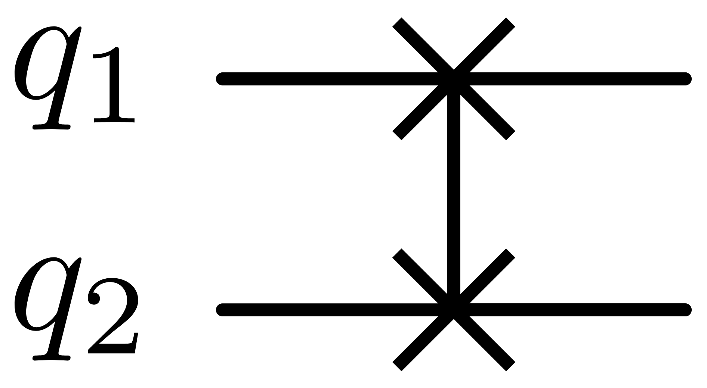
Matrix representation in the computational basis:
SWAP Gate
SWAP is its own inverse: applying it twice returns the original state.
Can be decomposed into three CNOT gates
Key point: SWAP is separable, not entangling
— unlike CNOT and Toffoli, SWAP maps product states to product states, so it can be built entirely from CNOTs and never generates entanglement on its own.
Toffoli gate (CCNOT)#
Toffoli
The Toffoli gate generalises CNOT to two control qubits.
It is a reversible, classically universal gate — enough to build any classical circuit.
Definition
The Toffoli gate (CCNOT) acts on three qubits — two controls and one target.
If both controls are \(|1\rangle\), the target is flipped.
Otherwise, the target is unchanged.
Matrix representation in the computational basis (8×8):
Circuit diagram representation:
{kind=link}
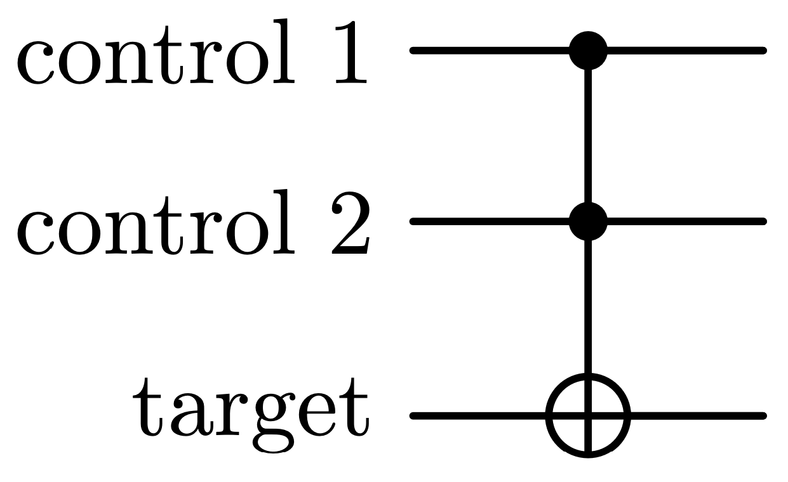
C1 in |
C2 in |
Target in |
C1 out |
C2 out |
Target out |
|---|---|---|---|---|---|
0 |
0 |
0 |
0 |
0 |
0 |
0 |
0 |
1 |
0 |
0 |
1 |
0 |
1 |
0 |
0 |
1 |
0 |
0 |
1 |
1 |
0 |
1 |
1 |
1 |
0 |
0 |
1 |
0 |
0 |
1 |
0 |
1 |
1 |
0 |
1 |
1 |
1 |
0 |
1 |
1 |
1 |
1 |
1 |
1 |
1 |
1 |
0 |
Universal quantum gate set#
Classical Recap
Remember in classical computing, the
NANDgate alone is a universal setAll other classical logic gates can be built from combinations of
NANDgates
The Quantum Case
A universal quantum gate set is a set of gates which can be combined to reproduce the function of any unitary operation with arbitrary accuracy.
Example of a universal quantum gate set:
{kind=link}
\(S\) and \(T\) are two phase gates related to the Pauli \(Z\) gate:
Features of quantum physics#
Entanglement (physically)#
Entangled systems share a quantum state.
A measurement performed on one subsystem instantaneously collapses the state of the other subsystem, no matter how far apart they may be.
Einstein called this ‘spooky action at a distance’.
{kind=link}
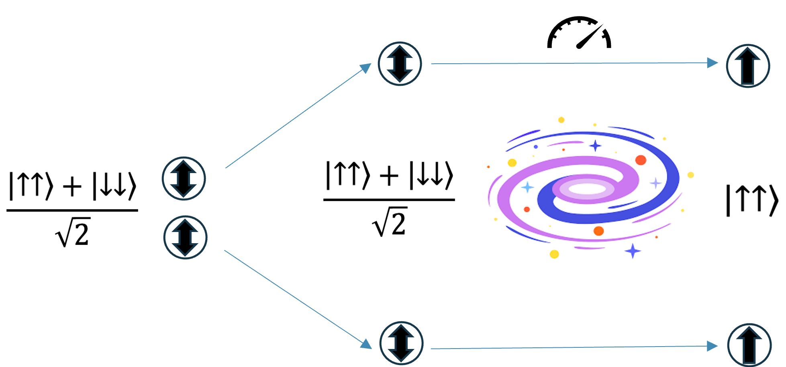
Superposition principle#
Definition
If \(|\alpha\rangle\) and \(|\beta\rangle\) are two states of a quantum system, then any linear combination (or superposition) of these states, given by
is a possible state of the system, where \(c_1, c_2\) are complex numbers, and \(|c_1|^2+|c_2|^2=1\).
{kind=link}
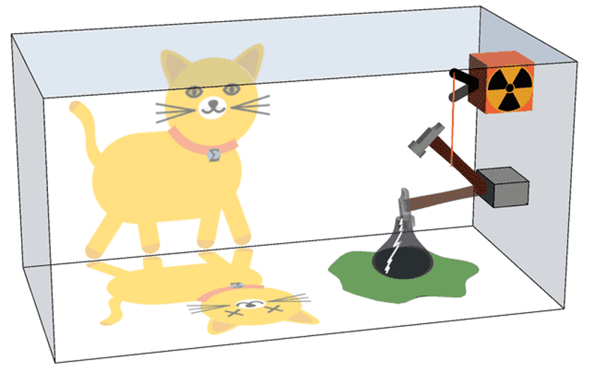
Uncertainty principle#
Heisenberg’s uncertainty principle states that there is a maximum precision with which we can measure certain observables simultaneously. This applies to various pairs of physical quantities, including position x and momentum p, as well as energy E and time t. These operators are non-commuting observables, which means that 𝑥𝑝≠𝑝𝑥, so the order of operators matters in quantum mechanics.
This minimum uncertainty is related to another uniquely quantum feature: wave-particle duality, which tells us that a quantum particle can also be described as a wave. If that wave contains a single frequency this means it has small uncertainty in energy or momentum, but large uncertainty in position. If on the other hand the wave contains many frequencies, it has a large uncertainty in momentum and small uncertainty in position.
Definition
“Certain pairs of observables cannot be simultaneously measured with arbitrary precision”
Here \(\Delta\) means the standard deviation or uncertainty in the quantity that follows
\(x\)=position, and \(p\)=momentum. \(h = 6.63\times10^{-34}\,\text{m}^2\text{kgs}^{-1}\) is Planck’s constant.
\(\hbar = h/2\pi\) is the reduced Planck’s constant
Where \(E=\) energy, and \(t=\) time
{kind=link}
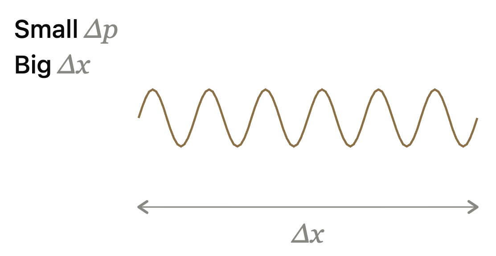
{kind=link}
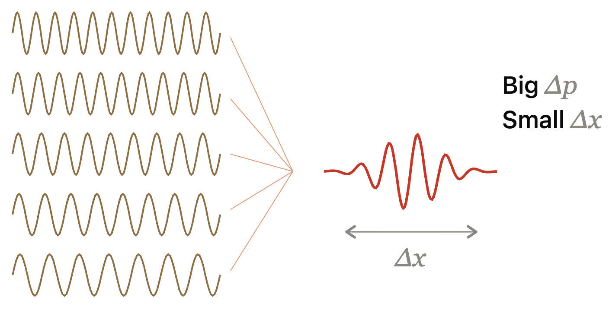
No-cloning theorem#
Classical
Classically we can copy an unknown bit using the following simple process:
We receive an unknown bit. This means we don’t know its state. We don’t know if it is 0 or 1.
Measure the bit and record the outcome. We either get 0 or 1. Say for example we obtain 1.
Using this information, prepare a new bit matching the original bit.
Now we have 11, i.e. original bit plus a copy.
Quantum
What happens if we try to copy a qubit using this procedure?
We receive an unknown qubit. We don’t know its state \(\psi=\alpha|0\rangle+\beta|1\rangle\). We don’t know the coefficients \(\alpha\) and \(\beta\).
Measure the qubit and record the outcome. We either get 0 or 1. Say for example we obtain 1.
We cannot prepare a new qubit matching the old one! We still don’t know 𝛼 and 𝛽.
Plus the original qubit is now destroyed!
“An unknown quantum state cannot be precisely recreated, it cannot be cloned.”
Caveat:
Known states can be copied infinitely many times!
By repeating the known algorithm used to prepare them.
Caveat:
Approximate cloning is possible!
By taking thousands of measurements in different bases. [Bužek & Hillery. PRL 81 22 (1998)]
Tunneling#
Classical:
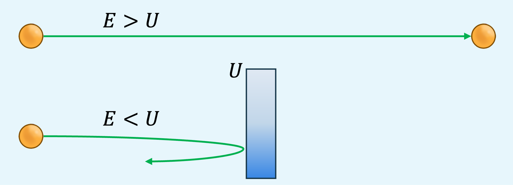
Particle with \(E>U\) passes through
Particle with \(E<U\) is reflected
Quantum:
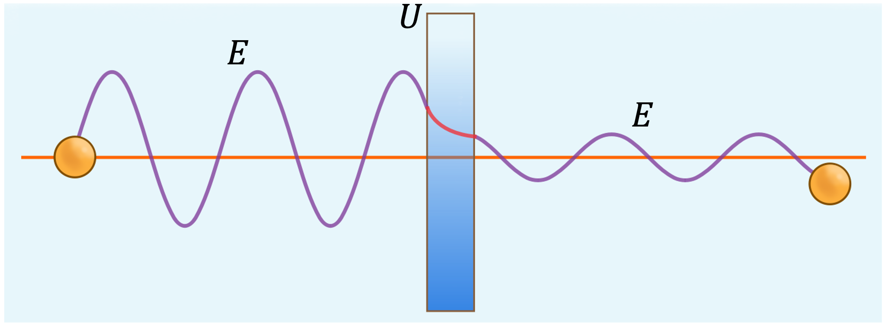
Quantum particle behaves as wave – partially reflected and partially transmitted
There is a non-zero probability of finding the quantum particle beyond the classically insurmountable barrier!
The probability decreases exponentially with the width of the barrier
Summary of the features of quantum physics#
Postulates of quantum mechanics
State as abstract vector |
Quantum states are represented by abstract vectors, which are not measurable objects. |
Observables |
Observable in classical mechanics \(\leftrightarrow\) linear Hermitian operator in quantum mechanics |
Uncertainty principle |
Certain pairs of physical properties can’t be measured simultaneously with arbitrary precision |
Superposition principle |
If a system can exist in two states, it can also exist in any linear combination of those states |
Measurement |
Measuring an operator gives one of its eigenvalues, and changes the state of the system. |
Consequences of the postulates
Interference |
Probability amplitudes interfere leading to diminished or amplified probability. |
No-Cloning |
It is impossible to make an independent and identical copy of an unknown quantum state. |
Entanglement |
When the state of a subset of quantum particles can’t be described independently of the others. |
Tunneling |
When a quantum particle passes through an energy barrier forbidden by classical physics. |
Connecting mathematical framework to experiment#
Putting it all together: qubits, gates & measurements#
Physical |
Mathematical |
Example |
|---|---|---|
State |
Vector |
\(\vert\psi\rangle=\alpha\vert 0\rangle + \beta\vert 1\rangle\) |
Gate |
Unitary matrix |
\(H=\frac{1}{\sqrt{2}}\begin{pmatrix} 1 & 1 \\ 1 & -1 \end{pmatrix}\) |
Observable |
Hermitian matrix |
\(Z=\begin{pmatrix} 1 & 0 \\ 0 & -1 \end{pmatrix}\) |
Measurement outcome |
Eigenvalue |
\(+1\) or \(-1\) for \(Z\) |
State after measurement |
Eigenvector |
\(\vert 0\rangle\) or \(\vert 1\rangle\) for \(Z\) |
Probability of outcome |
Squared magnitude of probability amplitudes |
\(\vert\langle 0\vert\psi\rangle\vert^2 = \vert\alpha\vert^2\) for outcome \(+1\) of \(Z\) |
Quantum measurement#
Probabilistic – depends on the state of the system and the observable being measured.
{kind=link}
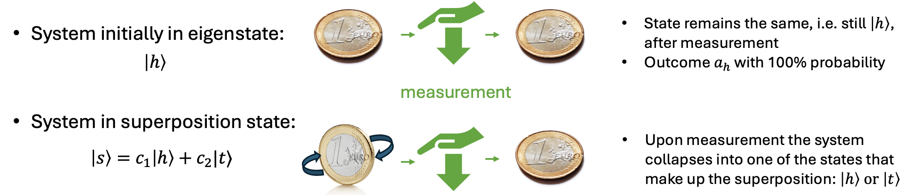
For a system initially in state \(|s\rangle\), the probability of measuring outcome \(a_h\) is given by: $\( P(a_h) = |\langle h|s\rangle|^2=\left|\langle h|\left(c_1|h\rangle+c_2|t\rangle\right)\right|^2=|c_1|^2 \)$
Similarly, the probability of measuring outcome \(a_t\) is \(P(a_t) = |c_2|^2\)
Expectation value#
Definition
For an observable represented by a Hermitian operator \(\hat{O}\) and a state \(|\psi\rangle\), the expectation value is
This is the average result you’d get measuring \(\hat{O}\) on many identically prepared copies of \(|\psi\rangle\).
Individual measurement outcomes are eigenvalues of \(\hat{O}\), denoted \(\lambda_i\).
Hence we can equivalently calculate the average as a sum over all these outcomes weighted by probability:
where \(|\lambda_i \rangle\) are the eigenvectors of \(\hat{O}\).
Expectation value: worked example#
Setup: measure the observable \(Z\) on the state
Step 1: identify the possible outcomes — the eigenvalues of \(Z\):
\(+1\) for \(|0\rangle\)
\(-1\) for \(|1\rangle\)
Step 2: compute each outcome’s probability from the Born rule
Outcome |
Probability |
Contribution |
|---|---|---|
\(+1\) |
\(\lvert\alpha\rvert^2\) |
\(+\lvert\alpha\rvert^2\) |
\(-1\) |
\(\lvert\beta\rvert^2\) |
\(-\lvert\beta\rvert^2\) |
Step 3: sum the contributions
Key point:
\(\langle O \rangle\) is always a real number and lies between the smallest and largest eigenvalues of \(O\)
In this case, \(\langle Z \rangle\) lies between -1 and 1, reaching \(\pm1\) only for the eigenstates \(|0\rangle\) and \(|1\rangle\).
For an equal superposition \(\langle Z \rangle=0\).
Summary#
We use the tensor product, denoted as \(\otimes\), to combine qubits together to create multi-qubit systems.
Multi-qubit gates and entanglement are essential for quantum algorithms.
Universal gate sets allow for the construction of any quantum operation.
Features which are used in quantum algorithms:
superposition
interference
entanglement.
We use the mathematical framework of vectors to represent states and matrices to represent gates and observables.
Reference#
For details on some of the math, you can see Mathematical Structure which goes a bit more in details about mathematical frameworks.